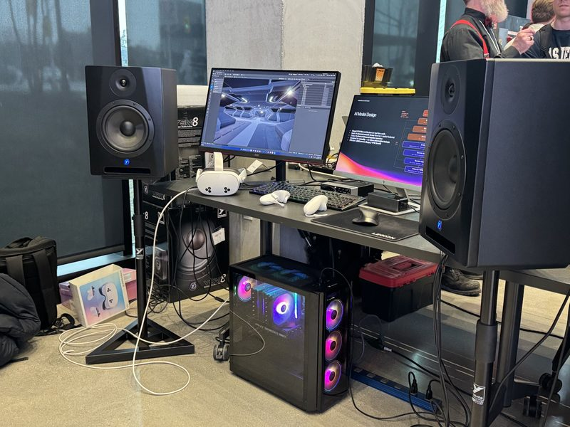
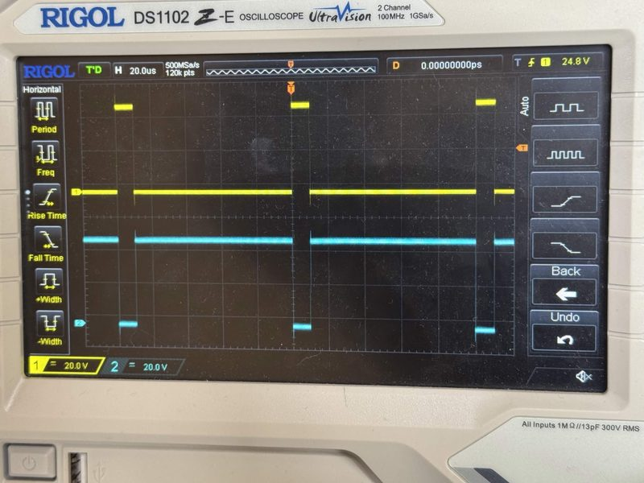
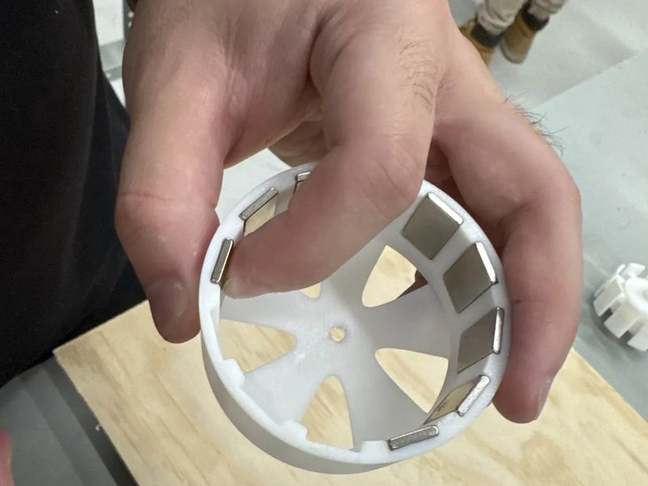
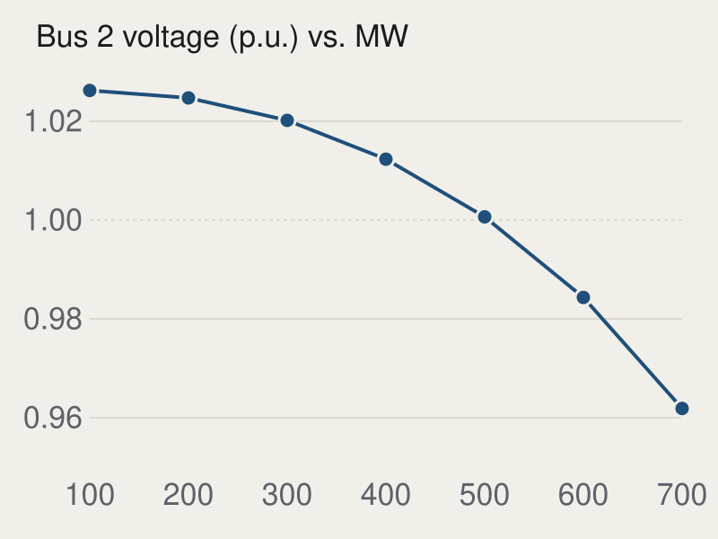
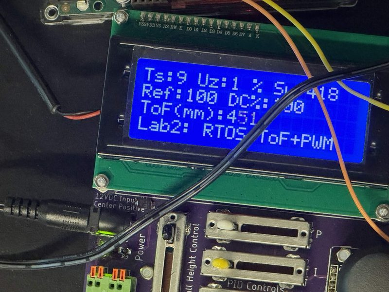
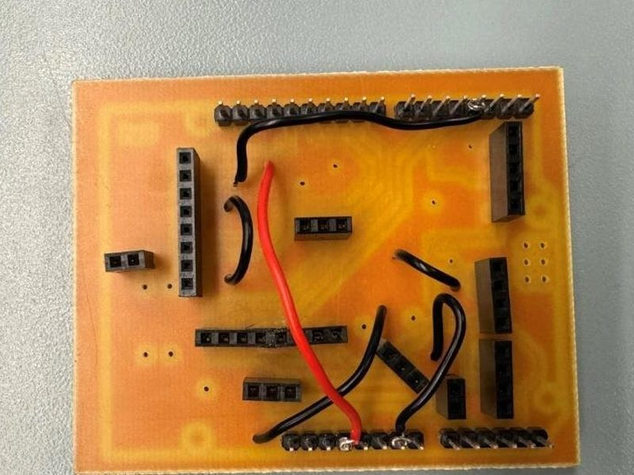

Harigovind Kuruvelil
BESc Electrical Engineering, Western University. Graduating December 2026.
I'm finishing my electrical engineering degree in London, Ontario, and I'm looking for entry-level roles in power systems, embedded systems, IT, or software.
Most of my project work has been hands-on: building and debugging circuits, programming microcontrollers, and tracking down faults with an oscilloscope. My capstone was a real-time spatial audio engine for VR, written in C++ in Unreal Engine 5.
harigovind_31@yahoo.comLinkedInGitHubRésumé (PDF)
Projects
Capstone, team of two · 2025–2026
Sound in VR that behaves properly around doors and walls. I trained and evaluated the model that refines early room reflections, wrote C++ runtime code in Unreal Engine 5 that reacts to scene geometry and listener position, and moved inference onto a worker thread so it couldn't stall the audio callback.
C++, Unreal Engine 5, PyTorch, TensorRT, Meta Quest 3S

Course project, team · 2025
An Arduino-controlled supply that switches high- and low-side MOSFETs through an IR2011 gate driver, designed for a 100 A target. I traced the switching and bootstrap faults with a scope and multimeter and found a supply-routing error in the gate-driver circuit. We then adjusted dead time and gate resistance and corrected the PWM timing.
MOSFETs, gate drivers, Arduino, oscilloscope

Course project, team · 2024
A three-phase, 9-slot/12-pole outrunner built around a 15 V / 5 A supply limit. I did the winding layout and material selection, wound and assembled the stator, and tracked down a continuity fault and a rotor-alignment problem. The prototype successfully ran at high RPM during testing.
Electric machines, winding, bench testing

Power systems lab · 2025
A PowerWorld model of a generator feeding an infinite bus over a 400 kV line, stepped from 100 to 700 MW. By 700 MW the mid-line bus had dropped to 0.962 p.u., losses were about 33 MW, and the generator had gone from absorbing 50 Mvar to supplying 208 Mvar.
PowerWorld, power flow analysis

Real-time embedded systems course · 2026
Closed-loop height control for a ball in a tube, on an Arduino Due running uC/OS-II. A time-of-flight sensor measures the ball and a PID loop drives the fan with PWM. I raised the sensing and control rate from 5 Hz to 20 Hz and tuned the PID gains.
Arduino Due, uC/OS-II, PID, PWM

Two course projects · 2024–2025
An Arduino home monitor on a single-layer PCB designed in EAGLE, and a monitoring system on a Cyclone V SoC's ARM Cortex-A9. I fixed grounding and pin-mapping problems on the PCB.
EAGLE, Arduino, Cyclone V SoC, SPI, I²C

Work and education
May 2023 – present
Student Border Services Officer
Canada Border Services Agency, Mississauga
I conduct inspections, review travel and immigration documents, and use government systems to process travellers and flag cases that need further examination. The work depends on accurate records, careful handling of sensitive information, and clear reporting to senior officers and partner agencies.
Sept 2021 – Dec 2026
BESc, Electrical Engineering
Western University, London, Ontario
Graduating December 2026. Relevant courses: real-time embedded systems, microprocessors, power electronics, electric machines, control systems, communication electronics, signal processing, and VLSI.
Skills
- Power electronics
- MOSFET switching, gate drivers, op-amp signal conditioning, sensor circuits, schematic and PCB layout, electric machines, power flow analysis. PowerWorld, PSCAD, Altium Designer, EAGLE, Micro-Cap.
- Embedded systems
- Arduino Due and Uno, Cyclone V SoC (ARM Cortex-A9), GPIO, timers, interrupts, PWM, ADC, UART, SPI, I²C, state machines, uC/OS-II. Quartus.
- Software
- C/C++, Python, MATLAB, Java, Bash. Git, Visual Studio, Linux, Unreal Engine 5.
- Bench work
- Oscilloscopes, multimeters, function generators, electronic loads, soldering, wiring, and PCB rework.
- Learning now
- Cadence tools and planar fabrication, in coursework this term.